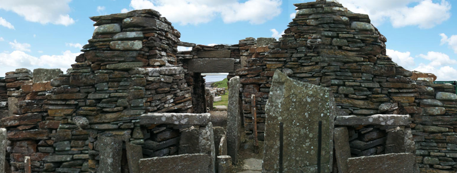
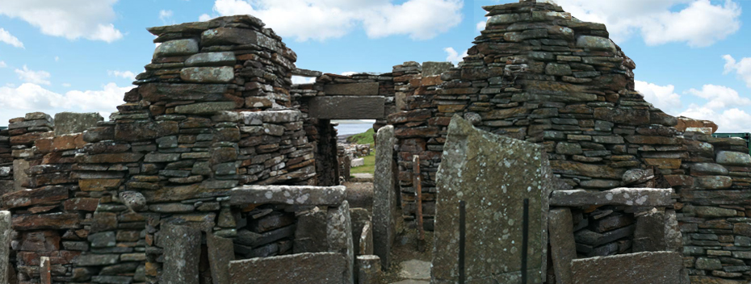

Requirement: 1
Our team chose to use the typeface Trajan Pro Bold for the redesign project. We felt that with this type of font we could project what the company would want their clients or prospective clients to feel about their company and how they handle business. With its old style feel but modern appearance gives it the perfect edge for what clients would want from an Archeological Consultant, an appreciation of the past and modern practices. The typeface is used as the main typeface to keep the web page consistent. Trajan Pro Bold is implemented in h3, h2, li, a, p and button tags. The default is used for color, weight, line-height, and letter-spacing for all except for font-size and letter-spacing is changed for h3 to 3px and 25px, and h3 letter-spacing is 3px.
Requirement: 2
For this requirement, you will need to determine your teams’ site color and graphic scheme. Graphics may include logo, banner, navigation, div and page backgrounds. Once you have identified your sites color scheme, please answer the three questions below. For our color scheme we decided to go for an earth tone. We felt that given the client base work of archeology that earth tones would be appreciated and more appealing to them as they navigate through the site. We chose the 3 colors to keep an easy flowing visual experience.
- Astra #fae9bc
- Equator #e1b16a
- Roof Terracotta #a43820
Areas that will be impacted by the color choice mainly revolves around lighter colors for more content intended areas and darker as the content lessens. Going off of that the darker colors in our color scheme are used to distinguish between read only content and navigation link content for easier mobility.
{kind=link}